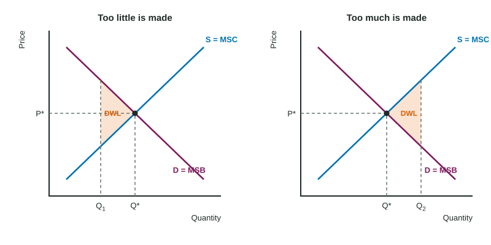

A town pool could stay open every evening of the week. Each extra hour gives swimmers some benefit and costs the town a lifeguard, heat and light. Open too few hours and evenings people would gladly pay for go to waste; open too many and the town pays for empty lanes. There is one best number of hours, and, as always in this course, it is found at the margin.
Benefit and cost to society
Until now, demand has measured what buyers are willing to pay and supply what it costs sellers to produce. Unit 6 asks a wider question: what is each unit worth to society, and what does it cost society?
- Marginal social benefit (MSB): the benefit of one more unit to everyone who gains from it.
- Marginal social cost (MSC): the cost of one more unit to everyone who bears it.
A unit is worth making if its MSB is at least its MSC. So the socially efficient quantity is where MSB = MSC. Below it, the next unit is worth more than it costs and society gains by making it. Above it, each extra unit costs more than it is worth. At MSB = MSC, total surplus (consumer surplus plus producer surplus) is as large as it can be, and the outcome is allocatively efficient: the right amount of resources goes to this good.
Worked example: the pool's hours. For the first six evening hours of the invented Pellmore pool, MSB is $18, $15, $12, $9, $6 and $3, and MSC is $4, $6, $8, $10, $12 and $14.
- Compare hour by hour. Hours 1 to 3 have MSB ≥ MSC ($12 ≥ $8 for the third). Hour 4 has MSB $9 < MSC $10.
- Efficient quantity: 3 hours.
- If the pool opens 5 hours, hours 4 and 5 each lose surplus: dollars of deadweight loss.
- If it opens only 2 hours, the third hour's net benefit, dollars, is lost.
The same rule as MR = MC for a firm, now applied to society: keep going while the next unit is worth at least what it costs.
When is a market efficient?
If buyers' demand captures every benefit of a good and sellers' supply captures every cost, then D = MSB and S = MSC. A perfectly competitive market then settles exactly where MSB = MSC. This is why economists praise competitive markets: with no one else affected and no market power, the equilibrium is efficient without anyone planning it.
That condition matters. A market equilibrium is not efficient automatically. When a seller has market power, or when a good's benefits or costs reach people outside the deal (Topic 6.2), the market quantity differs from MSB = MSC.
Deadweight loss on either side

When the quantity differs from the efficient one, the net benefit of the units that should (or should not) have been made is lost. That is deadweight loss: the triangle between MSB and MSC from the actual quantity to the efficient quantity. Its point always faces the efficient quantity, whether the market makes too little or too much. Shade the whole triangle, out to the efficient quantity.
You have already met several causes:
| Cause | Quantity compared with efficient | Where the deadweight loss lies |
|---|---|---|
| Per-unit tax (Topic 2.8) | too little | between D and S, from the taxed quantity to the old equilibrium |
| Binding price ceiling or floor | too little | between D and S, from the quantity traded to equilibrium |
| Per-unit subsidy | too much | between S and D, from equilibrium to the new, larger quantity |
| Monopoly (Topic 4.2) | too little (P > MC) | between D and MC, from the monopoly quantity to where D meets MC |
Worked example: a triangle. A market makes 40 units fewer than the efficient quantity. At the market quantity, MSB is $10 above MSC, and the gap closes evenly to zero at the efficient quantity.
- Shape: a triangle with base 40 units and height $10.
- Area: , so the deadweight loss is $200.
Forgetting the one half ($400) is the usual slip.
Market failure
A market failure is a market outcome that is not socially efficient: left alone, the market makes too much or too little. Market power is one cause you know. The rest of this unit covers the others: costs and benefits that fall on people outside the market (Topic 6.2), and goods that people can use without paying (Topic 6.3). Then Topic 6.4 asks what government policy does in each market structure, and Topic 6.5 turns from efficiency to how income is shared. Keep the two ideas apart: efficiency asks whether the total surplus is as large as possible, not who gets it.